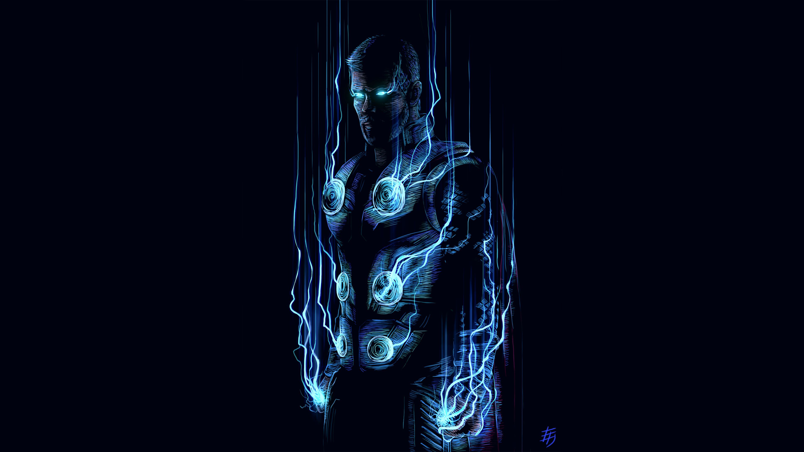
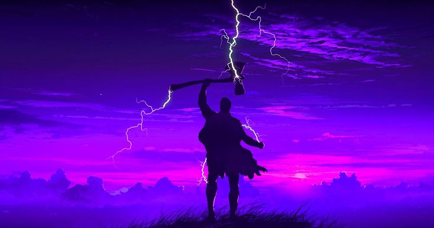
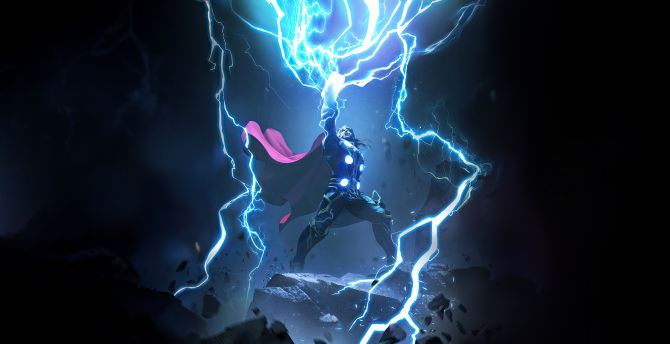

My SuperHero is THOR



Intro of My Hero:
- Thor, the God of Thunder from Norse mythology and Marvel Comics, is a heroic Asgardian warrior known for his immense strength, courage, and wielding the enchanted hammer Mjolnir. As the son of Odin, the All-Father, and heir to the throne of Asgard, Thor embodies the qualities of a noble yet flawed hero, constantly striving to protect the realms from destruction.
- Initially arrogant and impulsive, Thor is banished to Earth by Odin to learn humility. Over time, he grows into a selfless protector of the Nine Realms. With the help of allies like Jane Foster and the Avengers, Thor balances his dual existence as a god and a defender of Earth.
- Thor's journey is marked by significant challenges, including battles against Loki, the destruction of Asgard, and the loss of loved ones. His resilience and determination to protect the universe are unmatched, culminating in his pivotal role in defeating Thanos in the Marvel Cinematic Universe.
The Best Moment of Thor:
One of Thor's best moments is in *Avengers: Endgame*, when he summons both Mjolnir and Stormbreaker during the final battle against Thanos. This powerful moment showcases his worthiness and determination to fight for what’s right.
Additional moments I admire:
- Thor earns back Mjolnir’s worthiness after learning humility and protecting the innocent during his exile on Earth.
- His heroic act of summoning lightning and leading Asgardians in the Battle of the Bifrost to save Asgard.
- Thor’s emotional depth as he reconnects with his mother during the time heist in *Avengers: Endgame*, showing his vulnerability and growth.
- Thor forging Stormbreaker in *Avengers: Infinity War*, an ultimate weapon to face Thanos, displaying his determination despite immense pain.
- Thor’s speech on Asgard’s destruction and his leadership in guiding his people to find a new home.
Why I Like Him:
- Thor’s ability to balance his godly duties with a human touch, showing vulnerability and growth.
- His unyielding courage and willingness to sacrifice for the greater good, even in the face of loss.
- The way he embraces change and learns to lead by example, evolving from a reckless prince to a wise king.
- His inspiring attitude, humor, and strength that remind us to face challenges head-on and learn from them.
If you want to see some of the best of him:
- The journey of Thor's worthiness: Thor's Worthiness
- Thor’s battle with Hela: Battle with Hela
- Thor’s emotional moments: Thor’s Emotional Depth
- The forging of Stormbreaker: Stormbreaker Scene
Those Who Visited This Webpage:
Thank you for visiting this page and exploring Thor's incredible journey. Thor’s story of resilience, strength, and leadership teaches us that greatness comes not from power alone but from using it wisely and selflessly. As Thor says, "We’re all worthy of our destiny."